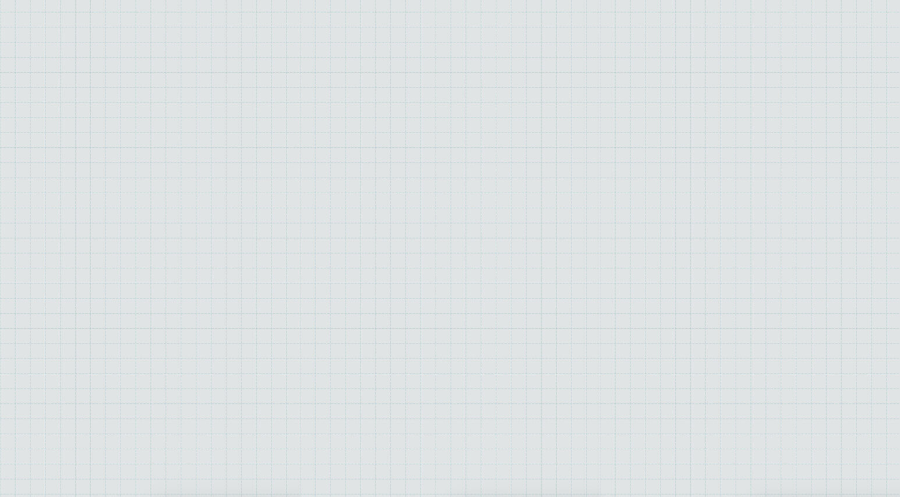

Кто я?
- Андрей Смирнов
- Head of Department, X5 Retail Group

- Командная работа
- Умение слушать
- Письменное общение (эффективная деловая переписка)
- Убеждение и аргументация
- Нацеленность на результат
- Клиентоориентированность
- Ведение переговоров
- Проведение презентаций
- Нетворкинг: построение и поддержание деловых отношений
- Эмоциональный интеллект
- Публичные выступления
- Ответственность за результат
- Наставничество (развитие сотрудников)
- Постановка задач сотрудникам
- Планирование
- Обратная связь
- Управление проектами
- Делегирование
- Управление мотивацией
- Контроль реализации задач
- Ситуационное руководство
- Поиск и анализ информации
- Адаптируемость
- Самостоятельность
- Планирование и целеполагание
- Восприятие критики
- Инициативность
- Управление эмоциями
- Рефлексия
- Управление собственным развитием
- Тайм-менеджмент
- Управление стрессом
- Логическое мышление
- Креативность
- Критическое мышление
- Открытость новому
- Системное мышление
- Многозадачность
- Проектное мышление
- Выработка и принятие решений
- Стратегическое мышление